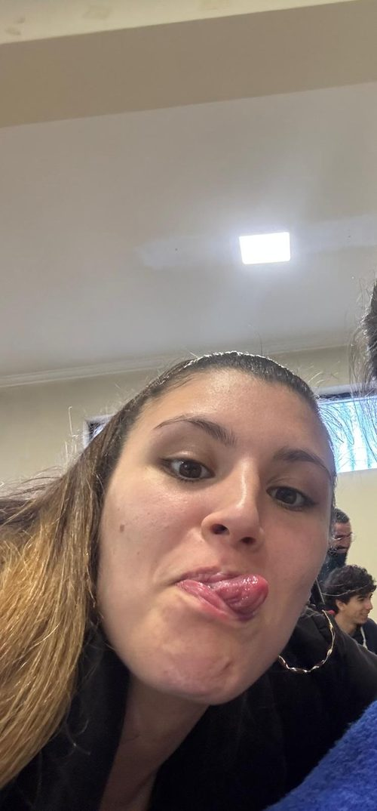
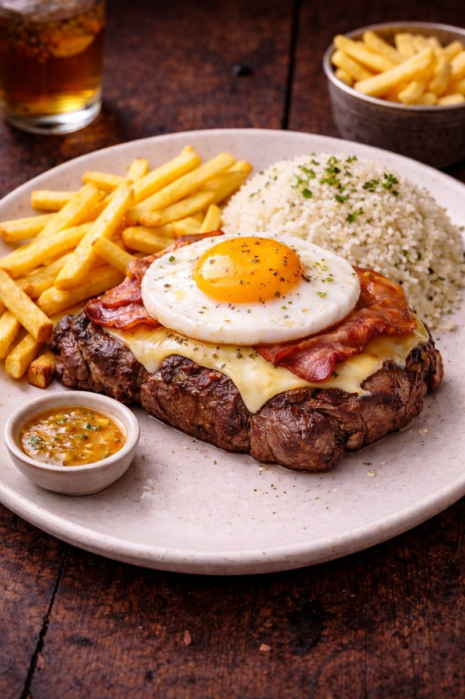
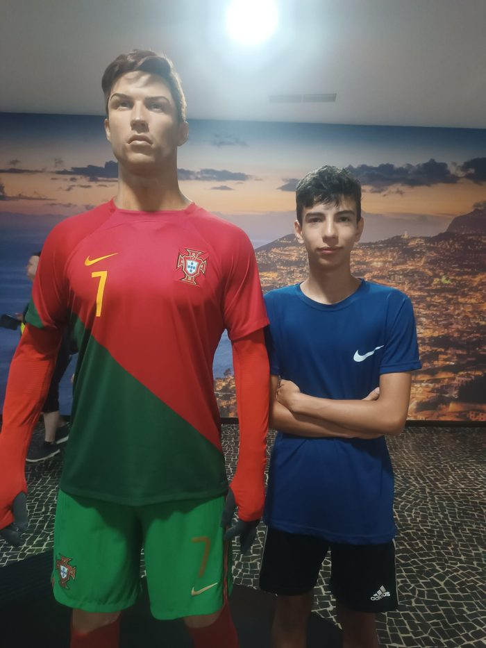
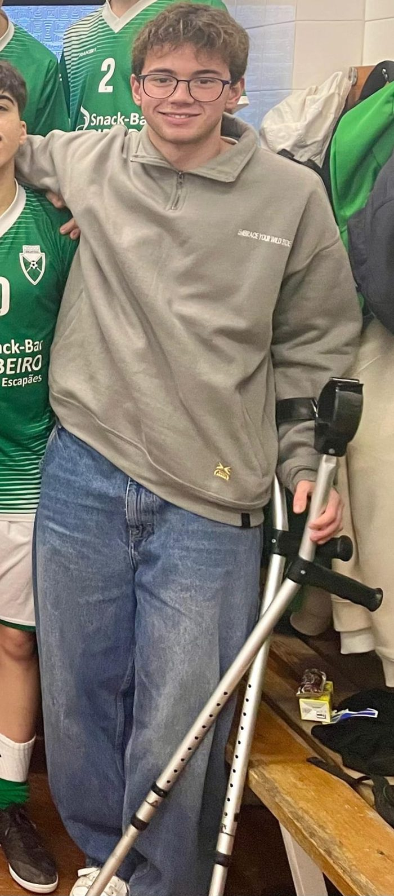

O favorito dos sócios
Sócio que é sócio, vem ao abate e não deixa de lado o "prega-me isto", esta saborosa refeição, pode deixar-te de fome abatida com o graciosíssimo bife de vaca premium, vindo dos Açores, com batatas fritas feitas na hora deliciosas e suculentas com um molhinho saboroso à parte e de não deixar o arroz de excelência de lado.

TATIANA SALSA⭐⭐⭐⭐⭐
Os nossos criadores

Olá eu sou o João, tenho 18 anos e sou a mente brilhante por detrás deste restaurante. O Guilherme é só um sócio que deu o guito, decidimos abrir este espaço, pois a zona da Amadora estava fraca em restaurante deste género, espero que gostem do espaço.

Eu sou o Guilherme, criador desta página, o outro encontrei na rua e pensa que foi ele que fez tudo sozinho. Decidimos desenvolver esta página porque achamos que seria fixe e que dava para entreter.